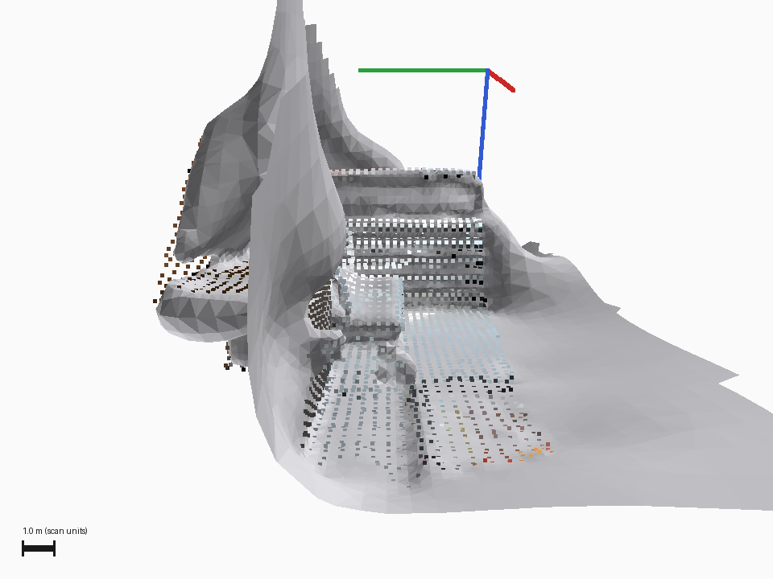
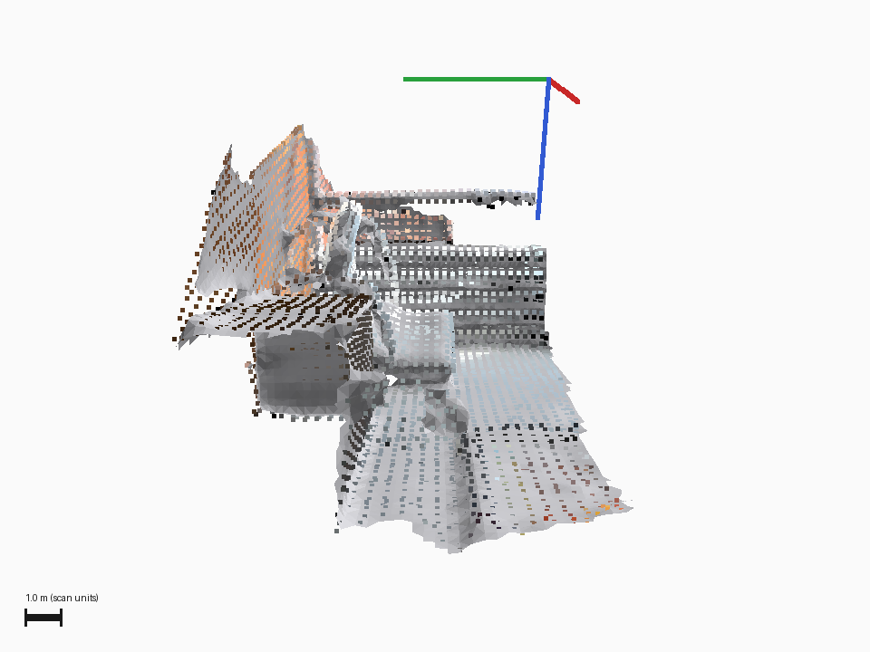
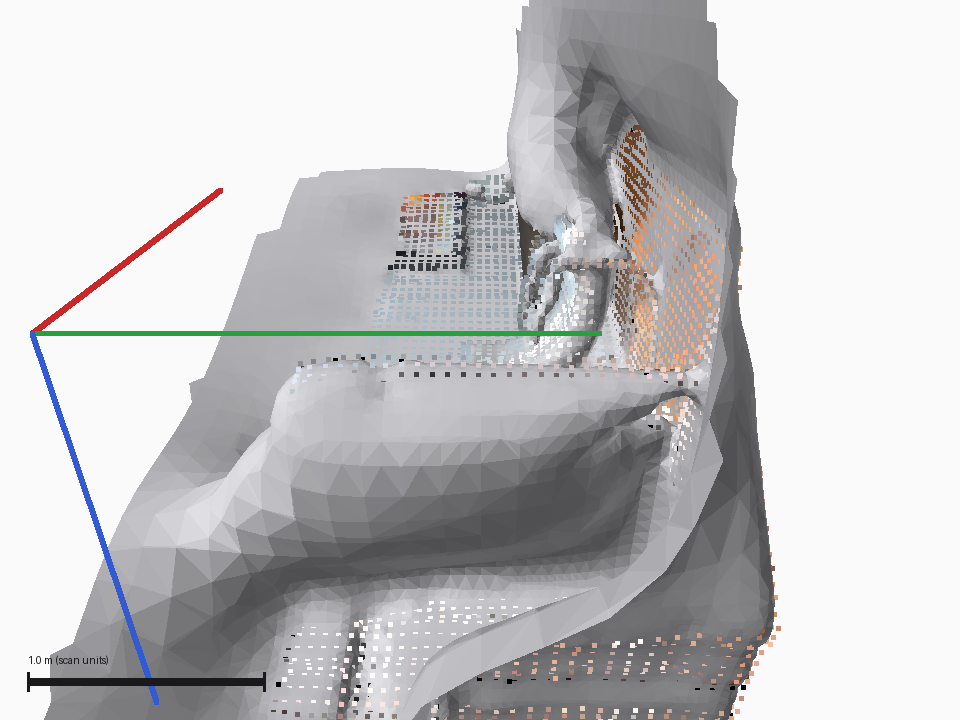
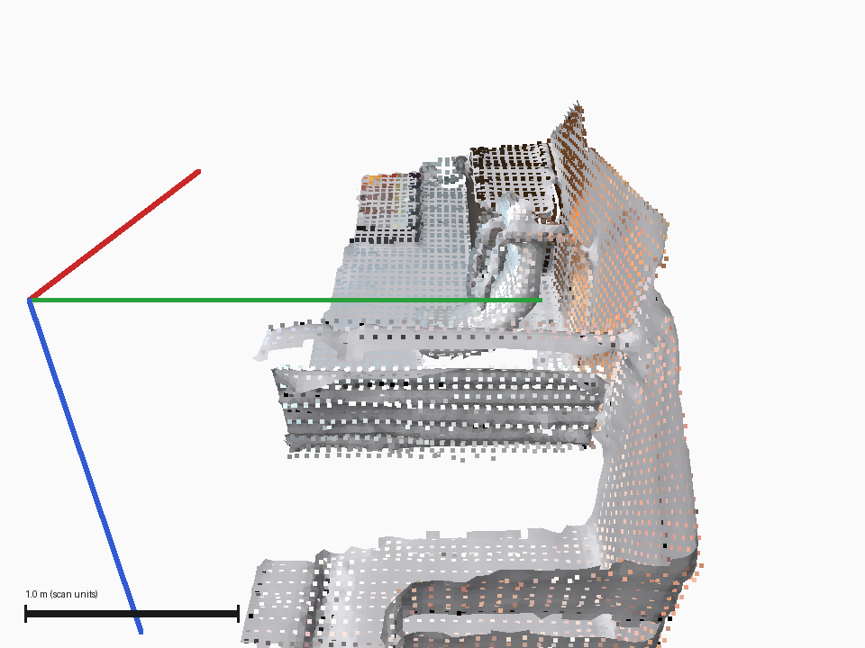
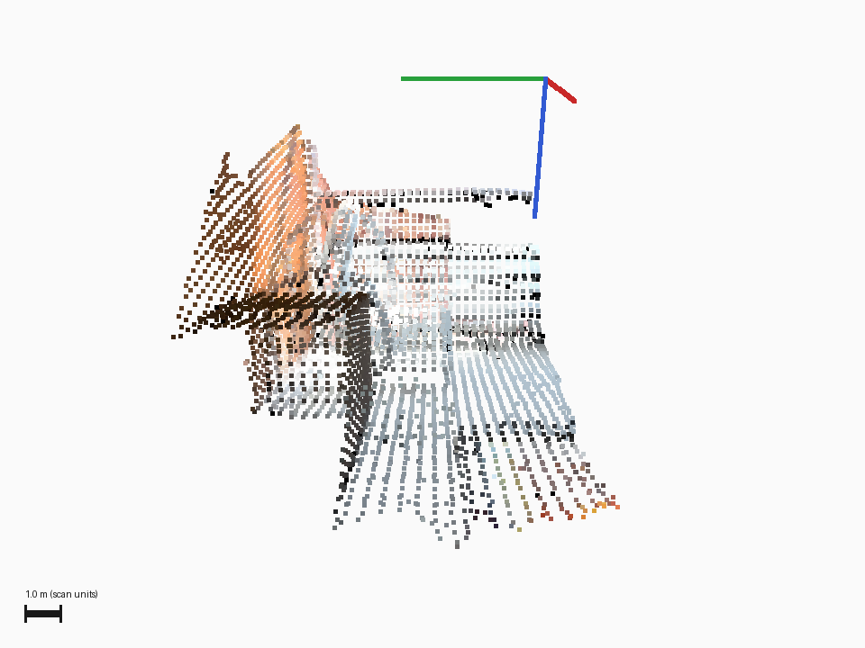
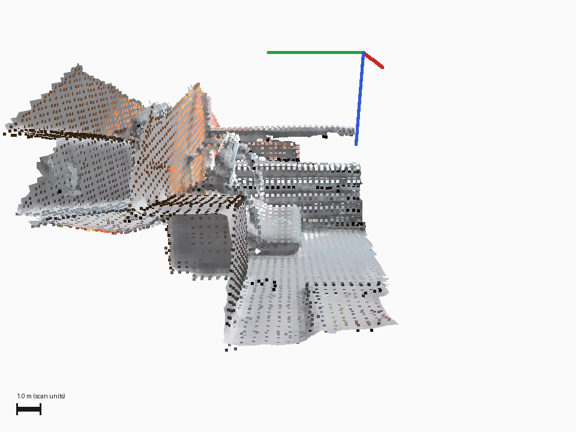
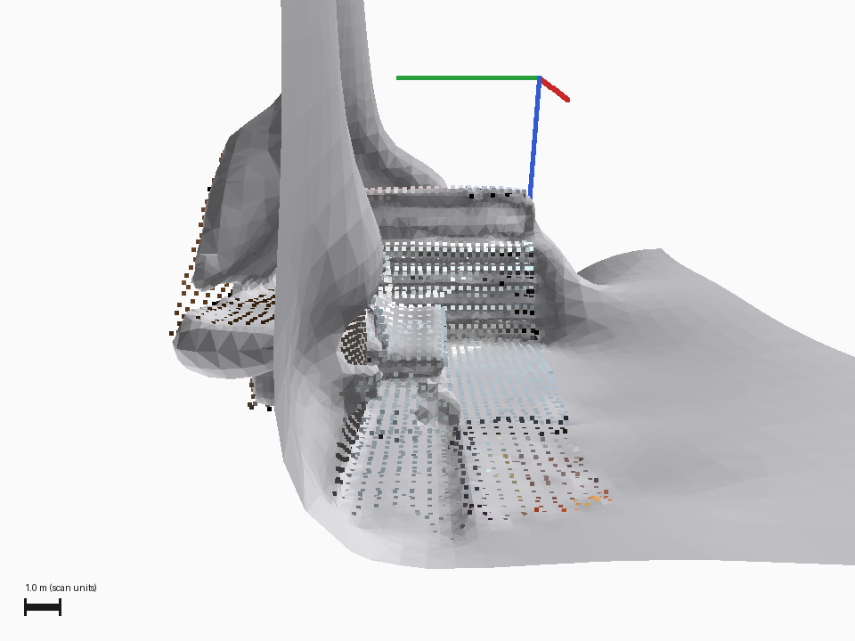

CPU renders of PLY outputs. Not Rerun UI screenshots. Acceptance pending.
The retained images and metrics agree, but the current candidate PLY has different bytes. The candidate removes broad surface sheets while held-out scan fit worsens in all three fragments. No overall accuracy or task-usefulness approval is claimed.
| Fragment | Baseline | Candidate | Result |
|---|---|---|---|
| cloud_bin_0 | 0.133208 | 0.248509 | Worse |
| cloud_bin_1 | 0.037442 | 0.071962 | Worse |
| cloud_bin_2 | 0.058723 | 0.163619 | Worse |
18 real calls; 6 controls; 3 models. Correct: MiniMax-M3 4/6, Gemma 2/6, MiniCPM 2/6. False accepts on rejection controls: 2/3, 3/3, and 3/3. All three accepted both the misaligned and no-crop controls. VLM acceptance remains unavailable for this rubric.
Matched pairs use the same recorded camera. Click any frame to open its original PNG. These images come from public Open3D / Redwood living-room1 data; retain the included CC BY 3.0 attribution.

Original PNG · SHA256 cbc93b25db6c32f109ff365a0ce21d260e21d3d744a821125895c5ef61f94bd7
Original PNG · SHA256 3e6db8b8269adaf34f5feb7f5879f800db7eb6203cfddbde7102a7a94983df2f
Original PNG · SHA256 4ad19bcdacb978cf267fbbd0974d71c6fa9d58c9a580d10683307449e7a0b05a
Original PNG · SHA256 0ef20daa5237630a1c0a109eafb6259b717800aeb4b62246bf278518f212b624
Original PNG · SHA256 d8886d7ebe79db6ecd59efe93c3203ba9b170c9d5bd8a339e3034f03c3ca6acb
Original PNG · SHA256 32316b89ab53fe6c0bbb6f47afa9cb5c0b84e031c91cebfeaac638b1f2abf7bf
Original PNG · SHA256 f0c83ac875202dc081045f6e1f1971b834b8e119fdd6d48fb7847efab1b452ceNo cloud access or customer credentials are required to view these files. Read README.md for scope, source-hash mismatch, and omissions.